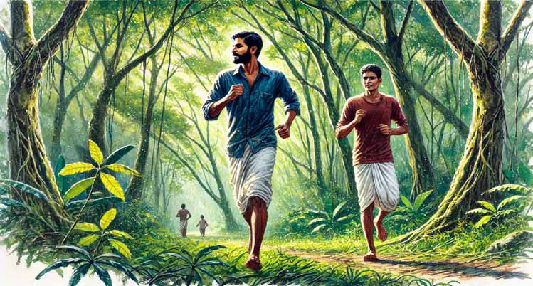
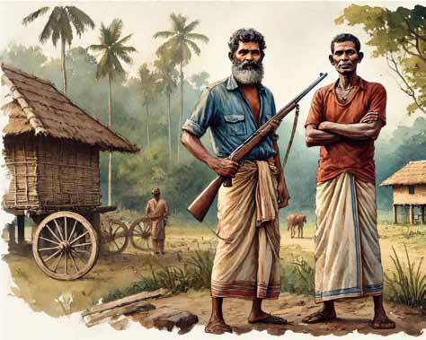
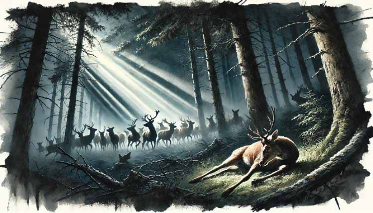

Monitor Memo
Monitor Memo
Jaffna Monitor hellojaffnamonitor@gmail.com 63 R emarks made by MP Kitnan Selvaraj, a first-time Tamil parliamentarian representing the National People's Power (NPP) from the Badulla District, have drawn criticism from political figures in the Northern Province. Selvaraj, a former estate worker and long-time advocate for plantation communities, referred to the proposal to merge the Northern and Eastern Provinces as an idea rooted in "Tamil extremism" during a recent parliamentary session. He also rejected calls for a separate Tamil state, prompting backlash from some Tamil political leaders. Selvaraj's comments were perceived by critics as dismissive of longstanding Tamil demands for political autonomy and the historical grievances of Tamil communities. Among those who responded was Saba Kugathas, a former member of the Northern Provincial Council and a representative of the Eelam People's Revolutionary Liberation Front (EPRLF). Monitor Memo Tamil Leaders Criticize MP Selvaraj’s Stance on Northern-Eastern Merger
Jaffna Monitor hellojaffnamonitor@gmail.com 64 In a statement, Kugathas accused Selvaraj of undermining the broader Tamil struggle for political rights and self-governance. He described the remarks as "reckless" and argued that they ignored the sacrifices made by Tamil civilians and others in pursuit of those goals. "MP Selvaraj's comments fail to recognize the historical realities of Tamil settlements in the North and East. Instead of focusing on the pressing issues faced by the plantation workers who elected him, he appears to be echoing Sinhala nationalist rhetoric in Parliament," Kugathas said. Kugathas also drew attention to ongoing challenges in the plantation sector, where workers continue to face low wages and poor living conditions. He urged Selvaraj to prioritize the concerns of his constituency over making divisive statements regarding Tamil rights. Referencing the historical context of Tamil governance in the Northern and Eastern Provinces and the Indo-Lanka Accord, which recognized the merger of the two provinces, Kugathas challenged Selvaraj to better understand the complexities of the issue. He criticized the use of terms like "Tamil extremism" to describe the merger proposal, describing it as an approach that risks fueling further division. The separation of the Northern and Eastern Provinces was the result of a court ruling initiated by the JVP, a party historically associated with Sinhala nationalist sentiments," Kugathas said. "Labeling the merger proposal as 'Tamil extremism' is not only misleading but also risks exacerbating existing divisions," he added.
Jaffna Monitor hellojaffnamonitor@gmail.com 65 Story T he sky was overcast. Kādaṉ stood on the wooden watchtower and let his eyes roam. They swiftly scanned around Kusavai lake and surfaced on the east by the orchard of Indian laurel trees. The orchard seems to be in a trance without even a leaf stirring. Even the cranes and tiny birds that would fly away at the slightest provocation, screaming bloody The Hunt Translated from the original Tamil short story vēṭṭai (Ntl;il) from the 1992 collection of short stories titled makkattuc cālvai (kf;fj;Jr; rhy;it) by S.L.M. Hanifa Translated by: Eḻuttukkiṉiyavaṉ (vOj;Jf;fpdpatd;)
Jaffna Monitor hellojaffnamonitor@gmail.com 66 murder, seem to be fast asleep. His eyes turned their gaze towards the sky. Not even a star glittered. The waning moon was bathing in the waters of the Mahāveli. If the overcast sky would permit a drizzle soon, Kādaṉ would definitely score a hunt. In his mindscape a herd of deer galloped away. Kādaṉ folded his arms, unfolded them again, and shook them vigorously. He turned towards Teacher: “Teacher, get up; the morning star has risen.” “How is it this cold? It seems it would even beat the cold spells in our Kandy town.” “If we get a rainy season downpour here, your Kandy cannot hold a candle!” Kādaṉ said proudly. Kandy Teacher warmed his arms and legs in the fire. In a little while, the koṇdal wind began to blow from the east. Having let it carry away their human scent, they started circling Kusavai lake in a northeasterly direction. Kādaṉ walked swiftly, Kandy Teacher jogging to keep up with him. There were only two people in the village who could walk like Kādaṉ. One was Tiger Sēhu, and the other was the government functionary for the farms in the village, Nūhu. The thorns along the way that dared to prick Kādaṉ’s soles were immediately blunted with a “snick”. The skin on his sole was taut and rigid like the skin on the neck of a fully grown sambar deer. Teacher kept running behind Kādaṉ, occasionally lifting a foot to sooth its sole being ravaged by thorns. They both had the same thought, ‘Today we must find game meat to grill.’ Both were
Jaffna Monitor hellojaffnamonitor@gmail.com 67 on the same quest. Kādaṉ resumed the conversation. “Can I sleep just because it is night, Teacher? All day I have to herd the cows like a cow myself. In the evening, I have to go to the lake shore to catch fish for the boss — if there is no fish, I have to at least buy him some eggs cheaply. Occasionally, someone leaves town after being transferred elsewhere. On those days, I must grill them wild boar,” he hawked and spat the phlegm out. His flashlight spotted something and focused on it. Against the pitch-black backdrop tiny green marbles glittered. ‘It is a herd of deer…’ his tongue curled inwards immediately. “Chee! That is a just a bird, Teacher. Everyone talks about truth and justice at the beginning. As time goes by, every donkey shows its true colors. Among them Senanayake is the worst. They ogle at our women cutting grass. Our women also grin and giggle at them shamelessly,” Kādaṉ said disgustedly. Teacher had a sudden realization. He remembered the gossip he had heard about Kādaṉ’s wife. ‘Who knows what the truth is!’ ‘If we chatter like this, the deer will scramble! Kādaṉ must have had a little bit of Pāthamuthu rāthā’s ganja, perhaps.’ Teacher’s thoughts scrambled back into their shells like startled turtles. “Teacher, let us warm ourselves a little at Puḷiyadipattu and circle Mōttāṉ lake. We’ll find something there.” Teacher let out a “muh” as he shivered in the cold. “Look Teacher, the tamarind tree has fruited. We need deer bones to cook with this tamarind,” Kādaṉ drooled at the thought. “Dēy! Hanifā kākā, are you so cold? If you move any closer, you will be on fire yourself.” Hanifā kākā sat up when he heard Kādaṉ’s voice. He shook his hands vigorously and alternated his hands and feet over the flames

Jaffna Monitor hellojaffnamonitor@gmail.com 68 to warm up. “Do we have any sugar? Let’s make some tea,” said Kādaṉ. “How long since we set eyes on sugar!” exclaimed Hanifā kākā. “Teacher! Get up. If we lounge around the fire like this, the job won’t get done,” Kādaṉ was keen to get on with the hunt. “Kādeṉ! Go look in Mōttāṉ lake. When I was herding the cattle back home during the day, I saw that a sambar deer had been shot there. If you get lucky, don’t forget us,” Hanifā kākā rubbed his hands as he spoke. “Today, I came here because of Teacher. He is being transferred out. He is the one who taught our children the alphabet, at least. Our people didn’t even give him a farewell meal. If it had been an MP, they would have bought a couple of bottles, and roasted a wild deer.” He slung the rifle over his shoulder and started walking, with Kandy Teacher following at a trot. “Kādar! It is too cold. The cartilage on my nose is crying.” “Yes, yes! Don’t make a noise,” Kādaṉ warned him as he scanned the lake shore with his flashlight. The darkness enveloped and swallowed the rays of light. A herd of deer that jumped up and scrambled was caught in the light. The next instant the “bang!” of a gunshot shook the entire area. The wounded deer desperately hobbled towards the cover of the bush, dragging its hooves. Teacher caught its feet and folded it, towards qibla, the direction towards Mecca. As the lips muttered ‘Bismillah’, a knife was sunk into the deer’s neck. After a few minutes, Kādaṉ sharpened his knife and began skinning the deer. In his hands, the knife danced over the deer’s body like an artist’s paintbrush. “Teacher! I knew already! That mangy dog at the house by the tamarind tree is a lucky charm. If we encounter it on our way to the hunt, we will definitely succeed.” The Teacher was panting, exhausted from carrying game meat. He was sweating profusely, despite the morning chill. Daylight was slowly breaking. “Teacher! Do you not have any muttāsi either? If I go home, I must have some tea, Teacher.”

Jaffna Monitor hellojaffnamonitor@gmail.com 69 “Why don’t we go to the mosque? You have to smoke the meat for us anyway.” “I can’t, Teacher. I will go home first, give some meat to the boss, sign in on the attendance register, and will come around by about eight.” Carrying his share of the meat and the deer’s head, Kādaṉ turned the corner by the tamarind tree. “Teacher! Be careful. Now is the time when elephants return to the jungle,” Kādaṉ’s words focused Teacher’s mind. As Kādaṉ neared his home in the farm’s personnel quarters, he heard something following him. It was the mangy dog from the house by the tamarind tree. It was wagging its tail vigorously. “Come, come, let’s go home.” The dog followed him, smacking its lips. When he reached home, he hung the meat hook on the barbed-wire fence. He wanted to relieve himself first … As he set foot on the veranda, the voices from within the house penetrated his ears. His heart was like the wounded deer, desperately hobbling towards the cover of the bush, dragging its hooves. “Get up and get going. He will come soon.” He felt as if a knife was sunk into his neck. His stomach churned, even though it was still very early in the morning. He hocked spit as hard as he could, and spat it out with disgust He turned around. There – the mangy dog from the house by the tamarind tree had savaged the meat hanging from the barbed wire fence.
